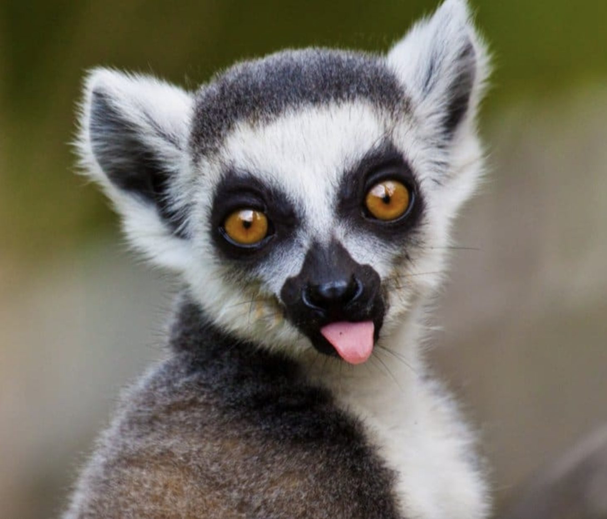

JumpyLemur431 is an aspiring UI/UX Designer. This portfolio highlights their exciting projects in the design space and showcases their technical skills. Please enjoy the portfolio and reach out for any questions. For more details on projects, please view the "Portfolio Projects"section below OR view all projects on the GitHub linked in the button below.
Click on each image logo or press the "View Project" for a detailed project overview.
Description: Selected a physical interface, the Toast POS Platform at Charuma Tea Bar, to record user observations. Then designed user personas based on recorded observations and designed a storyboard for the user experience.
Skills: User Experience, Storyboarding, Sketches, User Interviews, Personas
Description: Selected a simple website, Bishop Guertin High School Course offerings page, to redesign the workflow of. Identified flaws in sight, created low-fidelity and high-fidelity mock-ups, and built the responsive redesigned webpage.
Skills: HTML/CSS, JavaScript, Balsamiq, Figma
Description: Designed an interactive interface for an emerging start-up Discz, current Y-combinator 2023 participant. Mocked-up a new solution for their app to solve major issues. Worked in a group of 4 students.
Skills: HTML/CSS, JavaScript, Balsamiq, Figma, Teamwork
Description: Created a list-based interface for artist GOT7 users to filter, sort, and buy GOT7 Albums and EPs. Developed an interactive interface, used interface components, and tied the components to an internal data state.
Skills: React, JavaScript, CSS, Balsamiq